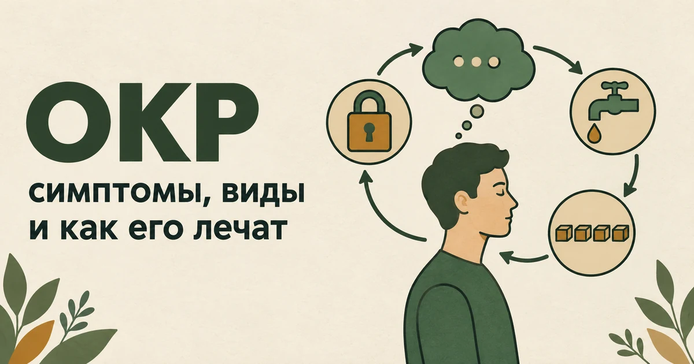
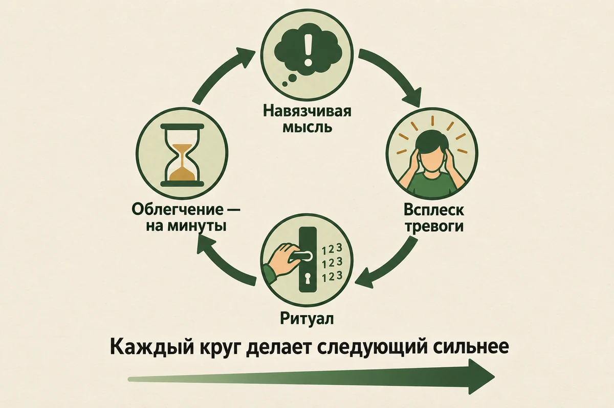
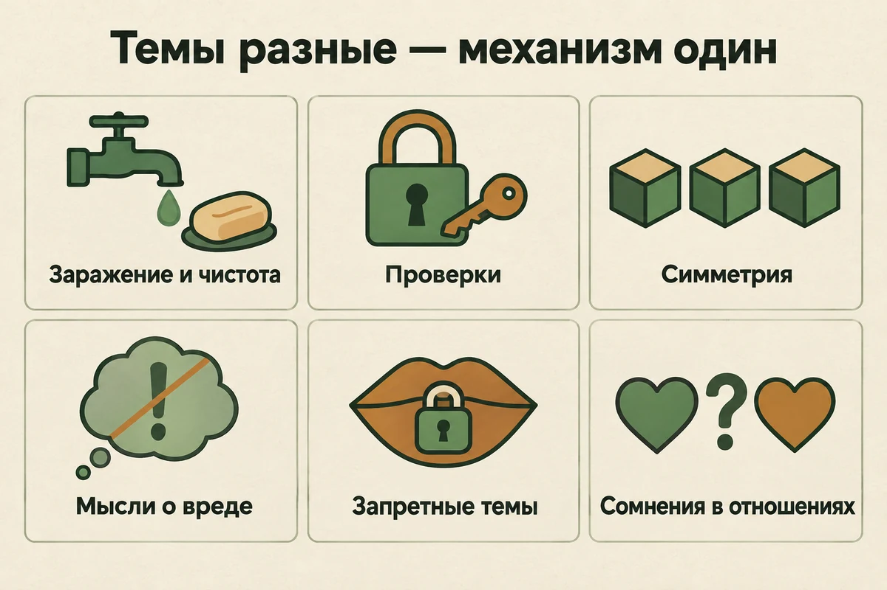
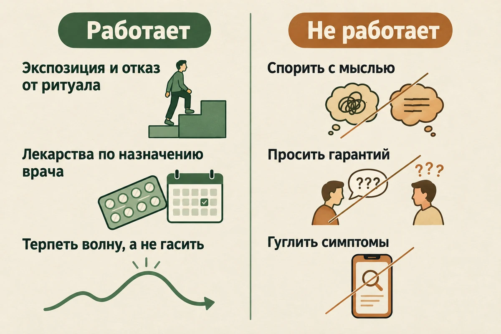
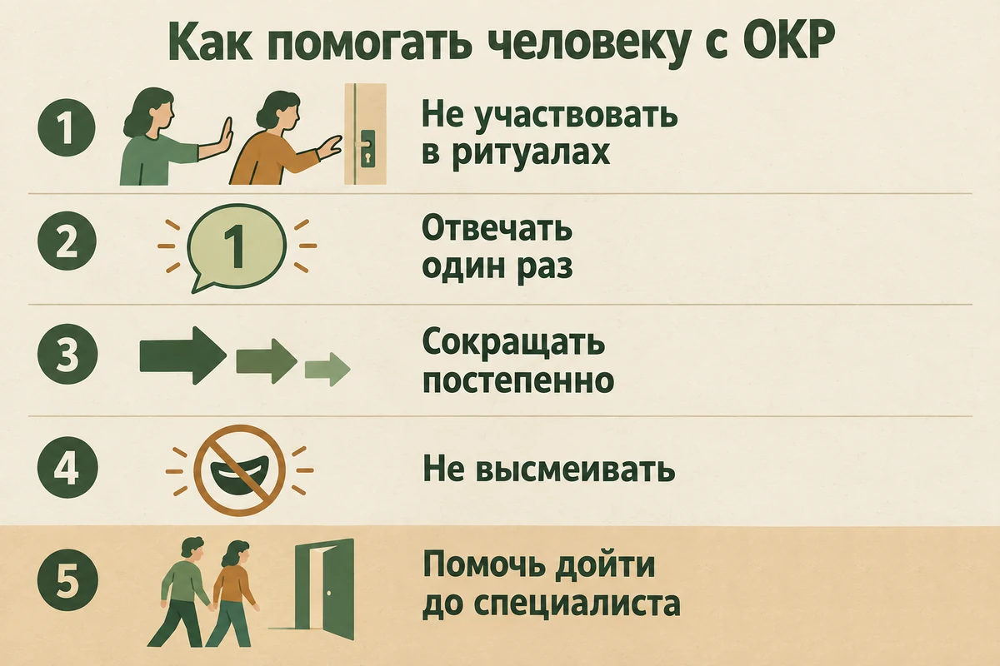

ОКР: симптомы, виды, причины и лечение обсессивно-компульсивного расстройства
Обновлено: 10.09.2026 · 18 минут чтения

ОКР — это не любовь к порядку и не педантичность, а расстройство, в котором пугающая мысль запускает действие, снимающее тревогу на несколько минут. Проверить дверь, вымыть руки, посчитать до определённого числа, мысленно произнести «защитную» фразу. Облегчение приходит — и именно поэтому круг затягивается: мозг запоминает, что тревогу убрал ритуал, и в следующий раз требует его снова, чуть дольше и чуть тщательнее. Расстройство это нередкое: в американском исследовании NCS-R, данные которого приводит Национальный институт психического здоровья США, пожизненная распространённость ОКР оценивалась в 2,3%, а российские клинические рекомендации 2025 года называют диапазон 1–3% населения. Ниже — как устроен этот механизм, какие у ОКР бывают формы (включая те, где ритуалов не видно со стороны), что помогает по доказательствам и что, наоборот, делает хуже.
- Как понять, что это похоже на ОКР
- Что такое ОКР и как оно устроено
- Почему «я немного ОКРшник» — не про ОКР
- Виды и проявления ОКР: какие темы бывают
- Ритуалы, которых не видно
- Страх причинить вред: значит ли это, что я опасен
- Почему возникает ОКР
- Когда это уже расстройство, а не черта характера
- Что помогает: экспозиция, терапия и лекарства
- Что делает хуже
- Что можно начать делать самому
- Как вести себя близкому человека с ОКР
- Когда обращаться срочно
- Частые вопросы
Как понять, что это похоже на ОКР
Короткий ответ для тех, кто пришёл сюда в тревоге и не готов читать пятнадцать минут. На ОКР похоже, когда сходятся сразу все пять пунктов:
- мысль, образ или побуждение возвращаются снова и снова, хотя вы их не звали;
- они вызывают сильное напряжение, отвращение или ощущение, что «что-то не так»;
- появляется потребность что-то сделать или проверить — руками или в уме;
- после этого действия ненадолго становится легче;
- круг повторяется, и с каждым разом требуется чуть больше.
Если это про вас — дальше разобрано, как устроен механизм, что с ним делают и куда идти. Если сходится не всё — скорее всего, речь о чём-то другом, и об этом тоже будет ниже.
Что такое ОКР и как оно устроено
Обсессивно-компульсивное расстройство состоит из двух частей, и обе зашиты в его название.
Обсессия — навязчивая мысль, образ или побуждение, которое приходит против воли, повторяется и вызывает тревогу, отвращение или ощущение неправильности. Ключевое слово здесь «против воли»: человек не придумывает эту мысль и не хочет её думать. Она ощущается как чужая — будто в голову что-то забросили.
Компульсия — повторяющееся действие или мысленный акт, который человек выполняет, чтобы эту тревогу снять. Помыть руки, вернуться и проверить утюг, разложить предметы ровно, мысленно повторить формулу, пересчитать до нужного числа.
Между ними — самая важная деталь, из-за которой ОКР не проходит само. Ритуал действительно работает. Тревога после него падает, и падает быстро. Мозг делает из этого простой вывод: опасность была настоящей, а спасло от неё вот это действие. В следующий раз мысль придёт с большей силой, ритуал понадобится раньше, а «доза» вырастет — не три проверки, а пять, не одно мытьё, а до ощущения чистоты, которое почему-то всё не наступает.

Отсюда следует вывод, который кажется странным, пока не увидишь механизм: лечение ОКР состоит не в том, чтобы избавиться от мыслей, а в том, чтобы перестать выполнять ритуалы. Навязчивые «а что если» время от времени бывают почти у каждого человека. Разница между человеком с ОКР и без него не в содержании мыслей, а в том, что происходит дальше.
Ещё одна черта, о которой редко пишут: у многих людей с ОКР сохраняется понимание, что страх и ритуал чрезмерны. Человек может логически объяснить, что руки чистые, дверь закрыта, а мысль ничего не значит, — и всё равно чувствовать невыносимое напряжение, пока не выполнит ритуал. Понимание не помогает, и в этом отдельная мука: со стороны кажется, что достаточно «объяснить». Но степень критичности бывает разной: у части людей убеждённость в реальности опасности очень высокая, и это тоже ОКР, а не что-то другое.
Почему «я немного ОКРшник» — не про ОКР
В разговорной речи ОКР стало синонимом аккуратности: ровные папки на рабочем столе, книги по цвету, раздражение от криво висящей картины. К расстройству это отношения не имеет, и путаница мешает настоящим людям с ОКР — их проблему воспринимают как милую особенность.
Разница проходит по четырём линиям:
| Любовь к порядку | ОКР | |
|---|---|---|
| Чувство | Приятно, когда сделано; это про удовольствие и вкус | Мучительно; действие выполняется, чтобы прекратить страх |
| Отношение к себе | «Мне так нравится», это часть меня | «Я не хочу этого делать, но не могу остановиться» |
| Цена | Времени уходит немного, жизнь не страдает | Часы в день, опоздания, конфликты, избегание мест и людей |
| Если не сделать | Слегка досадно, забудется через минуту | Тревога нарастает, пока не станет невыносимой |
Есть и второе распространённое недоразумение: ОКР часто представляют как страх грязи, и всё. Между тем у многих людей с этим расстройством порядок в доме обычный, а иногда и бардак — потому что ритуалы съедают силы, которых на уборку уже не остаётся.
Виды и проявления ОКР: какие темы бывают
Официального деления ОКР на «виды» в классификациях нет — диагноз один. Но темы обсессий повторяются от человека к человеку, и знать их полезно: многие годами не обращаются за помощью просто потому, что не узнают в описании себя.
- Заражение и чистота. Страх подхватить болезнь, испачкаться, принести домой «грязь». Ритуалы: мытьё, обработка, отказ от рукопожатий, стирка одежды после улицы, деление квартиры на «чистые» и «грязные» зоны.
- Проверки. Страх, что из-за вашей невнимательности случится беда: пожар, потоп, ограбление, авария. Ритуалы: возвращаться и проверять дверь, плиту, утюг, тормоза, отправленные письма.
- Симметрия и «правильность». Не эстетика, а ощущение, что что-то не так, пока предметы не встанут ровно или действие не будет выполнено нужное число раз. Часто сопровождается счётом.
- Мысли о вреде. Внезапные образы того, как вы навредите близкому, ребёнку, себе — при полном отсутствии желания это делать. Ритуалы: убирать подальше ножи, не оставаться наедине с ребёнком, мысленно проверять свои намерения.
- Запретные темы. Сексуальные или религиозные мысли, идущие вразрез с ценностями человека и вызывающие ужас и стыд. Именно эта форма чаще всего остаётся нерассказанной — и годами «лечится» молчанием.
- Сомнения в отношениях. Бесконечная проверка чувств: «а точно ли я люблю», «а тот ли это человек», с перебором доказательств и поиском признаков.
Важное уточнение о содержании: тема обсессии почти никогда не говорит о человеке ничего. Скорее наоборот — навязчивая мысль цепляется за то, что для человека наиболее ценно и страшнее всего потерять. Заботливая мать думает о вреде ребёнку; верующий — о богохульстве; человек, для которого важна порядочность, — о чём-то постыдном.
Отдельно стоит сказать про накопительство: в Международной классификации болезней 11-го пересмотра оно выделено в самостоятельный диагноз, а не считается формой ОКР. Туда же, в группу «обсессивно-компульсивных и родственных расстройств», отнесены выдёргивание волос и расчёсывание кожи. Механизм у них родственный, но помощь строится не совсем так же — это стоит иметь в виду, если вы узнали себя именно здесь.

Ритуалы, которых не видно
Самая частая причина, по которой человек не считает своё состояние ОКР: «я же ничего не мою и не проверяю». Между тем компульсия не обязана быть заметной — она может целиком происходить в голове.
- Мысленные ритуалы. Повторить про себя фразу, «отменить» плохую мысль хорошей, перебрать в уме доказательства, что ничего не случилось, представить нужную картинку определённое число раз.
- Поиск заверений. Спросить у близкого «ты же уверен, что я не мог этого сделать?» — и через час спросить снова, потому что уверенность выветрилась. Это самый незаметный ритуал: со стороны выглядит как обычный разговор.
- Гугление. Читать симптомы, форумы, статьи — до тех пор, пока не найдётся формулировка, дающая облегчение. Оно длится примерно до следующей ссылки.
- Проверка себя. Прислушиваться к своим ощущениям, чтобы понять, не хочу ли я на самом деле того, чего боюсь. Каждая такая проверка добавляет сомнений, а не убирает их.
- Избегание. Не брать в руки нож, не ходить мимо школы, не оставаться одному с ребёнком, не произносить определённые слова. Формально это «ничего не делать» — но по функции ровно то же самое: способ не встретиться с тревогой.
Именно эту картину обычно называют «чистым ОКР». Название прижилось, но отдельного диагноза с таким именем не существует: различие касается того, насколько компульсии заметны со стороны, а не того, есть они или нет. Помогает при них то же самое, что и при видимых ритуалах, — с той поправкой, что мысленные ритуалы труднее отследить, и на приёме о них стоит рассказать отдельно.
Проверить, ритуал ли перед вами, можно одним вопросом: я делаю это, потому что хочу, — или чтобы перестало быть страшно? Всё, что делается ради второго, кормит круг, даже если выглядит разумно.
Рассказать про навязчивые мысли вслух бывает страшнее всего — особенно если тема стыдная и вы никому о ней не говорили. Проговорить их можно анонимно, без регистрации и без осуждения, в любое время суток.
Рассказать о навязчивых мысляхСтрах причинить вред: значит ли это, что я опасен
Это самый мучительный и самый молчаливый вариант ОКР, поэтому о нём стоит сказать отдельно. Человеку приходит образ того, как он толкает близкого под поезд, режет ребёнка ножом, выпрыгивает из окна, — и он приходит в ужас: «раз я об этом думаю, значит, я на это способен».
Разберём по пунктам, потому что каждый из них важен:
- Мысль — не намерение. Намерение сопровождается желанием и планированием. Навязчивая мысль сопровождается ужасом и попытками себя от неё защитить. Это противоположные вещи, а не разные стадии одной.
- Содержание мысли ничего не говорит о характере. Обсессия выбирает не то, чего вы хотите, а то, чего вы больше всего боитесь и что для вас недопустимо.
- Проверка «а вдруг я всё-таки хочу» — это компульсия. Каждый раз, когда вы прислушиваетесь к себе в поисках доказательства, вы кормите сомнение: полной уверенности такая проверка не даёт никогда, а тревога после неё возвращается сильнее.
- Прятать ножи и не оставаться наедине — тоже компульсия. Избегание выглядит как ответственность, но работает как подтверждение опасности.
И честная граница, без которой этот раздел был бы безответственным: всё сказанное относится к нежеланным мыслям, которые вас пугают. Если появляется настоящее желание причинить вред себе или другому, обдумывание того, как это сделать, или вы перестаёте понимать, где реальность, — это другая ситуация, и нужна срочная помощь: 112 или ближайшее психиатрическое отделение.
Почему возникает ОКР
Честный ответ: единственной причины не найдено, и виноватых в этом расстройстве нет. Что известно на сегодня:
- Есть наследственный вклад. ОКР чаще встречается у людей, у чьих близких родственников оно тоже было. Это не приговор и не гарантия — речь о повышенной вероятности.
- Есть биологическая основа. Исследования указывают на особенности работы нейронных контуров, отвечающих за оценку ошибки и остановку действия. Отсюда то самое ощущение «ещё не завершено», которое не выключается само.
- Стресс и тяжёлые события могут запускать и усиливать симптомы. Расстройство часто впервые разворачивается в период перегрузки: переезд, потеря, роды, экзамены, тяжёлая болезнь. Но сами по себе они не считаются причиной: картина мультифакторная, и стресс работает на фоне других факторов уязвимости.
- Возраст начала. Симптомы могут появляться уже в детстве, но чаще расстройство разворачивается в подростковом возрасте и молодости. Российские клинические рекомендации называют средний возраст начала 19–20 лет: к четырнадцати годам расстройство успевает развиться у четверти заболевших, а дебют после 35 лет встречается редко. Систематический обзор 112 исследований, опубликованный в 2026 году в American Journal of Psychiatry, показывает ту же картину по миру: резкий рост в подростковые годы и пик к концу третьего десятилетия жизни.
- ОКР редко приходит одно. По российским рекомендациям, у 76% пациентов в анамнезе есть тревожные расстройства, у 63% — расстройства настроения, чаще всего депрессия. Это не осложнение и не «утяжеление диагноза», а обычная картина, которую специалист учитывает при лечении.
- Отдельный период риска — беременность и первые месяцы после родов. Обсессии в это время часто касаются ребёнка: не навредить, правильно стерилизовать бутылочки, снова и снова проверять, дышит ли он. Об этом почти не говорят вслух из страха, что «ребёнка заберут», — и зря: это известное состояние, и NHS советует в таком случае обратиться к врачу, а не молчать. Важно различать: при ОКР такие мысли нежеланные, пугают и противоречат ценностям человека. Если же появляются настоящее намерение навредить, потеря критичности, спутанность или необычные убеждения и голоса — это уже другая ситуация, и помощь нужна срочно.
Чего в этом списке нет — воспитания как причины. Строгая мать, приученность к чистоте и «травмы детства» сами по себе ОКР не вызывают. Детский опыт может влиять на то, какими будут темы обсессий, но не на то, появится расстройство или нет.
Когда это уже расстройство, а не черта характера
Границу проводит не содержание мыслей и не количество ритуалов, а три вещи, которые оценивают вместе.
- Время. Обсессии и компульсии занимают существенную часть дня — в качестве ориентира в диагностических руководствах называют больше часа. Но это именно ориентир, а не обязательная граница: диагноз ставят и при меньшем времени, если симптомы сильно мучают или мешают жить.
- Страдание. Это мучительно. Не «неудобно» и не «забавная привычка», а тяжело — со стыдом, усталостью и ощущением, что вы не управляете собственной головой.
- Влияние на жизнь. Появляются избегания, страдают работа, учёба, отношения. Человек перестаёт куда-то ходить, отказывается от планов, скрывает от близких, чем занят.
Три условия соединяются союзом «или», а не «и»: достаточно любого из них. Человек, который тратит на ритуалы сорок минут в день, но избегает половины города и не спит из-за проверок, — это тоже ОКР.
Как это оценивают на приёме. Диагноз ставят в беседе, а не по анкете: специалист расспрашивает, какие мысли повторяются и что человек делает в ответ, сколько это занимает времени, чего приходится избегать, насколько человек сам считает свои опасения обоснованными, — и отдельно проверяет, не объясняется ли картина другим состоянием: тревожным расстройством, депрессией, тиками, расстройством пищевого поведения.
ОКР или тревожное расстройство
Это самая частая развилка, и различает её не сила тревоги, а её устройство.
| Генерализованная тревога | ОКР | |
|---|---|---|
| О чём | О реальных вещах: работа, деньги, здоровье, дети | О конкретном «а вдруг», часто маловероятном и пугающем |
| Как ощущается | Беспокойство своё, «я всегда такой» | Мысль ощущается чужой и вторгающейся |
| Что делает человек | Обдумывает и переживает, специального ритуала нет | Выполняет действие или мысленный акт, чтобы снять тревогу |
| Что за этим стоит | «Что будет, если…» | «Мне нужно быть уверенным» |
Бывает и так, что есть и то, и другое: сочетания встречаются часто, и это ещё одна причина не ставить диагноз себе самостоятельно.
Отдельно скажем то, чего вы в этой статье не найдёте: здесь нет опросника с баллами и порогами. Тяжесть ОКР оценивают по клиническим шкалам, которые заполняются в беседе со специалистом, а не самостоятельно, — самопроверка по ним даёт цифру, но не даёт смысла. Если вы хотите отследить у себя общий уровень тревоги, для этого есть короткий тест по шкале GAD-7, но это именно тревога, а не ОКР.
Что помогает: экспозиция, терапия и лекарства
ОКР — одно из тех расстройств, где известно, что делать, и результаты хорошие. Плохая новость только одна: работающий метод неприятен по устройству, и обойти эту неприятность нельзя.
Экспозиция с предотвращением реакции
Это основной метод, и он входит в когнитивно-поведенческую терапию. Устроен так: человек вместе с терапевтом составляет лестницу ситуаций — от почти безобидных до самых страшных, — а затем встречается с ними, не выполняя ритуал. Дотронуться до дверной ручки и не мыть руки. Выйти из дома, проверив дверь один раз. Написать на бумаге пугающую мысль и не «нейтрализовать» её.
Тревога при этом сначала растёт, а потом меняется сама — часто спадает, иногда просто перестаёт быть невыносимой. Важно правильно понять цель: она не в том, чтобы дождаться нулевой тревоги, а в том, чтобы получить новый опыт — «я могу встретиться со страхом и неопределённостью и не выполнить ритуал». Именно это новое обучение и конкурирует со старой связкой «стало легче, потому что я проверил». Ожидание «после экспозиции тревога обязана исчезнуть» само превращается в ловушку: человек начинает следить, упала ли она, и это становится очередной проверкой. По данным NHS, при относительно лёгком ОКР обычно требуется около 8–20 сессий с терапевтом плюс упражнения дома между встречами; при тяжёлом течении курс длиннее.
Начинают всегда с нижних ступеней лестницы, и никто не заставляет прыгать в самое страшное. Если специалист предлагает «сразу самое сложное» — это плохой знак, а не признак решительности.
Лекарства
При выраженном ОКР или когда терапия не даёт достаточного эффекта, врач может назначить препараты — обычно из группы антидепрессантов СИОЗС; при их неэффективности рассматривают кломипрамин. Здесь важны две вещи, о которых часто не предупреждают и из-за которых люди бросают лечение на полпути:
- Эффект наступает не сразу — по данным NHS, может пройти до 12 недель, прежде чем станет заметно улучшение. В первые недели у части людей возникают побочные эффекты, в том числе усиление тревоги и возбуждение; при выраженных реакциях об этом нужно сразу сказать врачу, а не терпеть.
- Принимать нужно долго — большинству требуется не меньше года, а отменять препарат резко нельзя: это делают постепенно и вместе с врачом.
Подбор, дозировка и отмена — исключительно дело врача. Наша задача здесь только одна: показать, что лекарства при ОКР не признак слабости, а лечение без них не всегда возможно. И психотерапия, и фармакотерапия — самостоятельные методы с доказанной эффективностью; российские клинические рекомендации 2025 года отмечают, что комбинация психотерапии и лекарств работает лучше, чем одни только лекарства. Что выбрать и с чего начать, зависит от тяжести, противопоказаний, доступности терапии и предпочтений самого человека.
Как найти специалиста по ОКР
Метод работает, только если терапевт им владеет, а «просто поговорить о детстве» при ОКР эффекта не даёт. О чём спросить на первой встрече и что должно насторожить:
- Хорошие признаки: регулярно работает с ОКР; называет свой метод КПТ с экспозицией и предотвращением реакции; спрашивает не только про мысли, но и про ритуалы, в том числе мысленные; обсуждает, как перестроить участие семьи; честно говорит, что цель — не убрать мысли, а перестать от них защищаться.
- Плохие сигналы: «уберём плохие мысли»; «найдём первопричину, и всё пройдёт»; «просто перестаньте об этом думать»; обещание полного и быстрого избавления; предложение начать с самого страшного пункта.
Что ещё имеет смысл
Практики осознанности и приёмы из терапии принятия и ответственности помогают в одном узком, но важном месте: они учат замечать мысль, не вступая с ней в спор и не бросаясь её опровергать. Это не замена экспозиции, а хорошее к ней дополнение — особенно между сессиями.

Что делает хуже
Почти всё, что интуитивно кажется помощью при ОКР, на самом деле его кормит. Разбираться в этом стоит заранее, потому что ошибки тут очень естественные.
- Переубеждать себя логикой. Спор с навязчивой мыслью — это тоже ритуал. Каждый раунд заканчивается коротким облегчением и следующим «а вдруг».
- Искать гарантии у близких. «Скажи, что я не сделал ничего плохого» помогает на час. Потом требуется повтор, а вместе с ним растёт зависимость от чужих слов.
- Пытаться не думать. Подавление мысли усиливает её — это ровно тот эффект, который каждый пробовал на «не думай о белом медведе».
- Превращать поиск информации в поиск уверенности. Прочитать один нормальный разбор — это не ритуал, это разумно. Ритуал начинается дальше: пятнадцатая статья, потом форум, потом вопрос нейросети, потом снова близким — и всё ради ощущения «теперь точно всё в порядке», которое опять выветривается через час.
- Снимать напряжение алкоголем. Работает вечером, отдаёт наутро усиленной тревогой — этот механизм разобран в статье про алкоголь и тревогу.
- Ждать, что «само пройдёт». NHS прямо пишет: без правильного лечения и поддержки ОКР вряд ли улучшится. Между началом симптомов и обращением за помощью у многих проходят годы, и почти всё это время уходит на стыд.
Что можно начать делать самому
Сразу условие, без которого дальнейшее будет нечестным: самопомощь при ОКР не заменяет работу со специалистом. Но она способна остановить нарастание и подготовить почву — и это уже много.
- Назовите ритуалы своими именами. Выпишите за пару дней всё, что делаете «чтобы стало спокойнее»: проверки, мытьё, вопросы близким, гугление, мысленные фразы. Многие впервые видят масштаб именно на бумаге.
- Попробуйте отсрочку как первый шаг. Не «никогда не проверять», а «подожду несколько минут» — так проще начать. Но это промежуточный приём, а не лечение: если он превращается в правило «через десять минут я всё равно проверю», ритуал никуда не делся, просто переехал по расписанию.
- Не придумывайте себе «правильную норму» ритуала. «Проверять ровно один раз» звучит как прогресс, но легко становится новым ритуалом со своим правилом. Направление в терапии другое — постепенно отказываться от компульсии, а не находить ей допустимую дозу. Если сходу не выходит, это не провал: это и есть та часть работы, которую делают со специалистом.
- Перестаньте просить заверений. Самый трудный пункт. Договоритесь с близким заранее: отвечать один раз, а на повтор мягко напоминать про уговор.
- Не спорьте с мыслью — присвойте ей статус. «Это навязчивая мысль, она приходит и уходит». Не доказывать, что она ложная, а не начинать разбирательство вовсе.
- Уберите то, что усиливает тревогу физически. Недосып, много кофеина и хаотичная еда делают волны сильнее. О сне при тревоге — отдельная статья.
- Отмечайте победы. Каждый раз, когда вы не выполнили ритуал и переждали, — это буквально шаг лечения. Их стоит считать.
Как вести себя близкому человека с ОКР
Родные почти всегда втягиваются в ритуалы — из любви и желания уменьшить страдание. Отвечают на один и тот же вопрос по десять раз, моют руки перед входом в комнату, покупают вторую пачку салфеток. В клинической практике это называют семейной аккомодацией — когда близкие начинают участвовать в ритуалах, поддерживать избегание или постоянно давать заверения. Оно понятно по-человечески, но, к сожалению, поддерживает расстройство: человек получает подтверждение, что без ритуала действительно нельзя.
- Не обрывайте участие резко. Внезапный отказ выполнять привычное вызовет всплеск тревоги и конфликт. Договаривайтесь заранее и сокращайте постепенно, а при тяжёлых симптомах — согласуйте это со специалистом, который ведёт человека: домашняя экспозиция без понимания механизма может сделать хуже.
- Отвечайте на вопрос один раз. На повтор — не новый ответ, а напоминание об уговоре: «Мы договорились, что на этот вопрос я отвечаю один раз».
- Не высмеивайте темы. Особенно если речь о мыслях про вред или о запретных сюжетах. Человек и так уверен, что он чудовище; смех подтвердит эту уверенность и закроет тему навсегда.
- Не требуйте «просто перестать». Он бы перестал, если бы мог. Понимание бессмысленности ритуала у него обычно уже есть.
- Помогите дойти до специалиста. Найти врача, записаться, доехать вместе. Это самая полезная форма помощи из всех перечисленных.

Когда обращаться срочно
Есть ситуации, в которых не пробуют самопомощь и не откладывают запись:
- ритуалы занимают большую часть дня, и вы перестали справляться с работой, учёбой или уходом за собой;
- появились мысли о том, чтобы причинить себе вред, или ощущение, что жизнь стала невыносимой;
- к ОКР добавилась подавленность, которая держится неделями, — сопутствующая депрессия при ОКР встречается часто;
- от ритуалов страдает тело: повреждённая от мытья кожа, отказ от еды, обезвоживание;
- обсессии появились впервые после родов и касаются ребёнка;
- вы начали снимать тревогу алкоголем или растущими дозами успокоительных.
Статья носит просветительский характер и не заменяет консультацию специалиста. Если вам прямо сейчас невыносимо тяжело или появляются мысли о том, чтобы причинить себе вред, позвоните: 112 — при угрозе жизни; +7 (495) 989-50-50 — круглосуточная линия ЦЭПП МЧС России; 8-800-2000-122 (с мобильного — 124) — детям, подросткам и их родителям; 051 (с мобильного 8 (495) 051) — для Москвы. Куда ещё можно обратиться бесплатно — в справочнике помощи.
Частые вопросы
Как понять, что у меня ОКР, а не просто тревожность?
Различает не содержание мыслей, а то, что человек с ними делает. При тревожном расстройстве беспокойство размытое и длительное, оно перетекает с одной реальной темы на другую — здоровье, деньги, дети. При ОКР мысль конкретная, повторяющаяся и ощущается как чужая, а вслед за ней идёт действие, которое снимает тревогу: проверка, мытьё, счёт, мысленная фраза. Именно связка «мысль — ритуал — короткое облегчение» и есть отличительный признак. Час в день, о котором пишут в руководствах, — ориентир, а не обязательная граница: если ритуалов меньше, но они мучают, заставляют избегать ситуаций или мешают работе и отношениям, это уже повод обратиться к специалисту. Диагноз ставит он, а не тест и не статья.
Лечится ли ОКР полностью?
Корректнее говорить не «излечивается», а «хорошо контролируется»: у многих людей симптомы уходят до уровня, на котором перестают мешать жить. NHS при этом прямо предупреждает, что само по себе, без лечения и поддержки, ОКР вряд ли пройдёт. При относительно лёгком течении обычно хватает 8–20 сессий психотерапии с упражнениями между встречами, при тяжёлом курс длиннее и к нему добавляют лекарства. Обострения на фоне стресса возможны и после успешного лечения — это не возвращение к началу, а повод вернуться к уже освоенным приёмам.
Можно ли справиться с ОКР без лекарств?
При лёгком и умеренном течении лечение обычно и начинают с психотерапии — когнитивно-поведенческой с экспозицией и предотвращением реакции. Лекарства подключают, если терапия не дала достаточного эффекта, если ОКР выраженное или если состояние настолько тяжёлое, что заниматься упражнениями не получается. Это решение врача, а не вопрос силы воли: отказ от препарата при тяжёлом течении просто затягивает выздоровление. При этом и психотерапия, и лекарства — самостоятельные методы с доказанной эффективностью, а при тяжёлом ОКР их сочетание нередко предпочтительнее: российские клинические рекомендации отмечают, что комбинация работает лучше, чем одна только фармакотерапия.
Что такое «чистое ОКР» и бывает ли ОКР без ритуалов?
«Чистое ОКР» — популярное название для случаев, когда ритуалов не видно со стороны. На деле они почти всегда есть, просто происходят в голове: человек мысленно перебирает доказательства, повторяет про себя защитные фразы, прокручивает воспоминание, пока не появится ощущение уверенности. Такие мысленные действия работают ровно как мытьё рук — дают короткое облегчение и закрепляют круг. Поэтому и помогает при них то же самое, а отдельного диагноза «чистое ОКР» не существует.
Помогает ли онлайн-терапия при ОКР?
Данные в пользу этого есть: систематический обзор и метаанализ 2024 года в Clinical Psychology & Psychotherapy показал эффективность интернет-программ когнитивно-поведенческой терапии при ОКР. Но важно, что именно там понимается под онлайн-терапией: структурированная программа с экспозицией и предотвращением реакции, обычно с сопровождением специалиста, а не переписка о самочувствии. Формат встречи — очно или по видео — вторичен, ключевое, чтобы метод был тем самым. Приложения и чаты, в том числе наш, такой программой не являются: они помогают проговорить состояние и заметить ритуалы, а лечение ОКР ведёт специалист.
Опасны ли контрастные мысли — вдруг я это сделаю?
Навязчивая мысль о вреде себе или близким пугает именно потому, что противоречит вашим ценностям, — и по этому же признаку она отличается от намерения. Человек с ОКР не хочет делать то, о чём думает: он в ужасе от самой мысли и выстраивает жизнь так, чтобы этого точно не случилось. Тревога здесь не предупреждение, а ложный сигнал, и проверки «а вдруг я всё-таки хочу» только усиливают его. Другая ситуация — если мысль о причинении вреда сопровождается настоящим желанием или планом: тогда нужно обратиться за помощью немедленно.
К какому врачу идти с ОКР?
Диагноз ставит врач-психиатр или психотерапевт с медицинским образованием, он же назначает лекарства, если они нужны. Психотерапию ведёт психотерапевт или клинический психолог, работающий в когнитивно-поведенческом подходе, — при выборе специалиста имеет смысл прямо спросить, применяет ли он экспозицию с предотвращением реакции при ОКР. Начать можно и с терапевта в поликлинике, он даст направление. Из бесплатных вариантов в России есть психоневрологический диспансер по месту жительства и региональные центры психологической помощи.
Материал подготовлен командой AI Therapist и основан на позиции доказательной медицины: описание симптомов, механизма и методов лечения приводится по материалам NHS, Национального института психического здоровья США (NIMH), клинического руководства NICE, клинических рекомендаций Минздрава РФ 2025 года и Международной классификации болезней 11-го пересмотра. Мы сознательно не публикуем клинические шкалы тяжести ОКР: они предназначены для оценки специалистом в беседе, а не для самостоятельного заполнения. Статья носит просветительский характер, не является медицинской рекомендацией и не заменяет консультацию врача — диагноз ставит и лечение назначает специалист.
Источники: NHS — Obsessive compulsive disorder (OCD), overview, NHS — OCD, treatment, NIMH — Obsessive-Compulsive Disorder, NIMH — OCD, статистика распространённости, NICE CG31 — Obsessive-compulsive disorder and body dysmorphic disorder, ВОЗ — МКБ-11, Клинические рекомендации «Обсессивно-компульсивное расстройство», Минздрав РФ, 2025, Jeong Y. D. et al. «Global Prevalence of Obsessive-Compulsive and Related Disorders», American Journal of Psychiatry, 2026, Polak M. et al. «Internet-Based Cognitive Behavioural Treatments for Obsessive–Compulsive Disorder», Clinical Psychology & Psychotherapy, 2024. Источники проверены 10.09.2026.
Кто отвечает за содержание сайта и по каким правилам мы готовим материалы — на странице о проекте.
Читать также
- Навязчивые мысли: почему они появляются и как от них избавиться — про то же явление у людей без расстройства: когда «а что если» это норма.
- Тревога: полный гид по видам и способам справиться — если тревога не сводится к ритуалам и разлита по всему дню.
- Паническая атака: что делать в момент приступа — при ОКР приступы паники тоже нередки.
- Когнитивно-поведенческая терапия — подход, внутри которого работает экспозиция с предотвращением реакции.
- Бессонница при тревоге — недосып усиливает волны навязчивостей.
- Тест на тревожность GAD-7 — 7 вопросов, результат сразу и без регистрации.